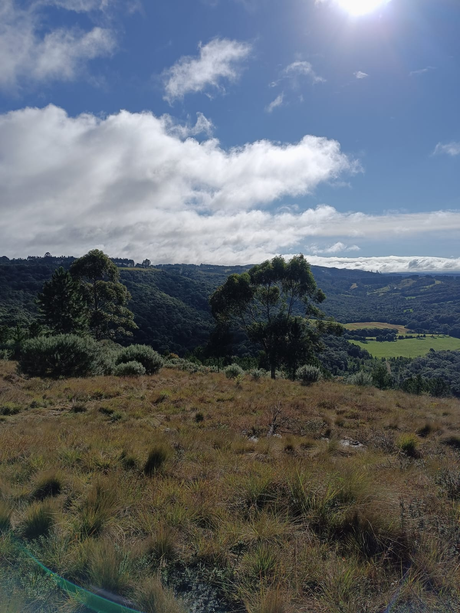

Cadeia de Abastecimento: do Campo à Cidade
A cadeia de abastecimento envolve todas as etapas que fazem com que produtos do campo cheguem às prateleiras da cidade. Desde a colheita e armazenagem até o transporte e a distribuição nos pontos de venda.
Um sistema eficiente de abastecimento garante alimentos frescos, com menor desperdício e preços mais justos para os consumidores.
Modais de Transporte
O modal rodoviário é o mais utilizado no Brasil, especialmente em trajetos de curta e média distância. Caminhões são fundamentais na distribuição.
O modal ferroviário é eficiente para transportar grandes quantidades de produtos por longas distâncias, especialmente grãos e minérios.
O transporte hidroviário, apesar de subutilizado, tem grande potencial logístico em regiões com rios navegáveis, como a Amazônia.
Desafios nas Grandes Cidades
Grandes centros urbanos enfrentam desafios como trânsito intenso, restrições de horários para caminhões e falta de espaços adequados para descarregamento.
Para melhorar a eficiência, é necessário investir em centros de distribuição, planejamento urbano e integração entre diferentes modais de transporte.